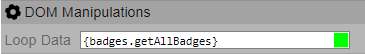
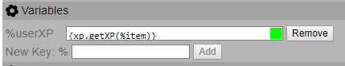
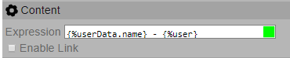
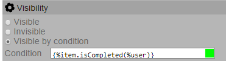
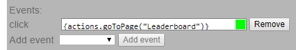

Views allow control over what is displayed in the system’s pages. The admins of the course are able to edit its views.
Aspects
The Aspects are specializations of the views for specific roles or users. This allows for the possibility of having multiple versions of a page that can be displayed according to the roles of the users viewing the page or the user associated with the page.
Aspect Types
There are two types of aspect for views:
Role - Single- view that can show a different aspect according to the viewer’s roleRole - Interaction- view that can show a different aspect according to the roles of the viewer and the user associated with the page
Pages
Pages an be created on the views tab by clicking the ‘Create New Page’ button writing its name and choosing an aspect type. Pages of Role-Single type will be automatically added to the navigation bar.
A view is constituted of other views which may be called view parts. New parts can be added to any block by pressing the ‘edit layout’ button on its toolbar and then selecting a part from the drop down menu at the end of the block, they can then be rearranged in the desired order. View parts can have a few different types.
Part - Text
This part displays text using expressions to show the output
Part - Image
This part is similar to the Text part. However it produces an image instead of text.
Part - Block
This part is a view that can contain other views and may have a header
Header
The header, when enabled, displays an image and a text, that serve as the title of the block.
Part - Table
This part is a table with columns and rows. The row and column options appear after pressing the ‘edit layout’ button on the table part.
Templates
Templates are parts of views that are saved and can be reused. They can be created in two different ways, while editing a view by pressing the ‘Save Template’ button on the toolbar of any of its parts, or by going to the view page in the settings and pressing ‘Create New Template’.
The templates can be used by copy, which can be done in the same drop-down menu used to add a new part to a block. This way the contents of the template are copied to the current view.
They can also be used by reference by using the ‘Add Template Reference’ drop-down menu. Templates by reference are connected to the original template and any changes made to it will affect the original.
GameCourse has its own language and vocabulary to allow users to personalize views and interact with the database, this is used in the settings of the individual view parts. It is very similar to a programming language. The language has multiple libraries, some of which only became available with the activation of specific modules, the functions defined in those libraries can return values, objects (a data structure containing values) and collections (a data structure containing any number of objects).
An example of an expression is Hello
{{'{users.getUser(%viewer).name'}}! which would be evaluated as ’Hello John!’,
for example, if the name of the user was John. In this language anything typed
outside of the curly brackets is accepted as text with the exception of names
starting with % (percentage) which return the value of a variable, to
escape this case use
%%. When you want to evaluate something, it should be placed inside curly
brackets, for example, {{'{2*3}'}}. To access the name of the user as we
demonstrated in the first example, we use {{'{users.getUser(%viewer).name}'}}
which will fetch the user with the id %viewer (which is evaluated as the
id of the user that is logged in the application) and then returns the name of
that user.
Operations and Functions
As in many other languages the expressions provide the simple mathematics operators for
addition +, subtraction -, multiplication
*
, division / and mod %
. It also provides logic and bitwise operators, and &&
(bitwise &), or ||
(bitwise |), negation ! (bitwise
∼
)and bitwise xor ˆ
. It is
also possible to call functions defined in GameCourse from the expressions. A
function call starts with the library that provides that behavior or a
collection/object belonging to one of those libraries and is followed by a dot
. and an arbitrary number of letters, A through z. Arguments of the
function are enclosed in parenthesis () and need to be comma
,
separated, if there are no arguments the parenthesis are not necessary.
The libraries available by default are system are actions, awards, allCourses, participations, system and users. There are also some functions not associated with any library that can be used over objects or collections.
There are also 3 other libraries which can be available if their respective modules are enabled, which are badges, skillTrees and xp.
Other functions may be added by registering them in a module.
The available functions according to the enabled modules can be found in the Functions page.
Variables
Variables are used by the expressions to allow an easier creation of expressions without having to write very long expressions to access certain fields. A variable starts with a % (percentage symbol) and is followed by an arbitrary number of letters, A through z. It is possible to call functions over variables, for example is we have a variable %item containing an user object we can call functions of the users library such as %item.username.
GameCourse has already defined some built-in meta variables:
%course- Represents the course that the user is manipulating;%user- Represents the user associated to the page which is being displayed;%viewer- Represents the user that is currently logged in watching the page;
And when the Loop Data field is used there is also:
%index- Represents the current index while iterating a collection;%item- Represents the object that is currently being iterated in that view;
The settings of each part include multiple field, most of them receive expressions of the Expression Language which will have a green square if they are correctly formatted and red if not. However, they can have a green square and still cause errors which will be reported when attempting to save the view.
DOM Manipulations - Loop Data
This field is used to get data from the database that will be accessible with the %item variable. If the expression produces a collection, then it will be looped through. The objects provided by the expression can be accessed in the current view part or any of its children with %item variable and its index in the collection will be on %index.
Example
For example, to configure a list of badges:
In this case the element will be repeated for each badge and the variable %item will have the object of the current badge.
Variables
This section allows for the creation of new variables, by first writing their name and pressing ‘Add’ and then writing an expression for its value. To delete a variable, press the ‘Remove’ button. The variables can be used in the current view part and any of its children.
Example
For example, to define a variable %userXP containing the XP of the user in %item:
Content
This section exists for blocks, text and image parts. In blocks it simply has a checkmark to enable the header which will add an image and text to the beginning of the block.
In the other types of view parts this section has the Expression that defines what is showed by that part. There is also the possibility of making the text/image clickable to a specific link by enabling the link and defining a url.
Example
For example, if %user was 10000 and %userData was the user object for that %user who's name was "Example Name":
This expression would write "Example Name - 10000"
Visibility
In this area the visibility of an element can be set as either ‘Visible’- the element is shown normally, ‘Invisible’- the element is rendered but hidden and can be made visible again using events, or ‘Visible by condition’ – the element id only rendered if the condition expression evaluates to true.
Example
For example, given a skill object %item, if the %user as completed the skill then the view part will be rendered:
Styling/Misc - Style
This field receives CSS code specifying the style of the element, the expression language may be used here if necessary.
Styling/Misc - ID
This field defines the id of the html element, this could be useful if the is already some css code defined for that element.
Styling/Misc - Class
This field defines the class of the html element, this could be useful if the is already some css code defined for that class.
Styling/Misc – Label
The label field is in events that affect other parts of the page and identify them by the label.
Styling/Misc - Events
This area is where events can be selected and the actions that they trigger can be defined using the expression language. The events fields are the only places where the actions library is to be used.
Example
For example, to go to the Leaderboard page when the user clicks on the element:
